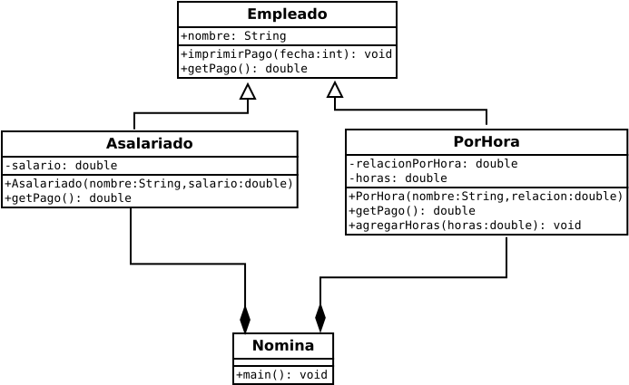
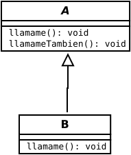

Clase abstracta
Se usa una clase abstracta para decirle al compilador lo que está tratando de hacer con anticipación. En la clase abstracta, se declaran aquellos métodos que son inapropiados para la variable de clase de referencia pero que serán definidas por clases descendientes que instancian objetos.
Definición de clase. Es la construcción lógica sobre la que se construye la programación orientada a objetos, ya que define la forma y la naturaleza de un objeto. Cualquier concepto que desee implementar en un programa debe ser encapsulado en una clase.
Java: manual de referencia, Patrick Naughton y Herbert Schildt, Pág. 115
Definición de clase abstracta. Es una clase incompleta que plantea la naturaleza de los métodos sin presentar su implementación.
Un método ficticio que será anulado en todos los instantes por los métodos definidos en las
clases descendientes. Hay una forma mejor de como usar una clase abstracta para
decirle al compilador lo que está tratando de hacer con anticipación. En la clase abstracta, se declaran aquellos métodos que son inapropiados para la clase de la variable de referencia, pero que serán definidos por clases descendientes que instancian objetos. Para declarar un método, simplemente escriba el encabezado del método con el resumen adicional del modificador y termine este encabezado de método modificado con un punto y coma.
Por ejemplo, observe el modificador abstract en el encabezado de la clase Empleado.
El modificador abstract se utiliza para declarar una clase o un método abstracto.
Una declaración abstract no contiene suficiente información para definir el método. Solo especifica
su interfaz del mundo exterior y dice que las definiciones existirán en algún otro lugar. ¿Dónde? En toda clase instanciable descendiente. El uso de un método abstract evita la definición poco elegante del método ficticio y es una mejor manera de implementar el polimorfismo.
Algo es abstracto si es de naturaleza general, no detallado
en la naturaleza. Una declaración de método abstracto es de naturaleza general. No proporciona detalles del método. Eso
solo sirve para advertir que el método existe y que debe ser desarrollado por definiciones de métodos "reales" en todas
las clases instanciables descendientes. ¿Hemos seguido esta regla para nuestro programa? En otras palabras, ¿tenemos definiciones del método getPago en todas las clases descendientes de Empleado? Sí, las clases Asalariado y
PorHora ya contienen las definiciones requeridas del método getPago.
Cómo siempre, necesitamos revisar las clases Asalariado, PorHora, y Nomina haciendo estos reemplazos:
obj.toString en la siguiente declaración:
System.out.println(obj.toString());
Introduction to programing in Java, John Dean and Raymond Dean, Pág. 531
Clase
Definición de clase. El mecanismo de clase en un lenguaje orientado a objetos provee una forma de crear los objetos. Una clase es un diseño que puede ser reeusado cualquier número de veces para crear los objetos. Una clase define un nuevo tipo de datos.
Object-Oriented Analysis and Design, Brahma Dathan and Sarnath Ramnath, Pág. 13
Ejemplos de clases
Código en java. El siguiente código es un ejemplo de clase. Faltaría agregarle métodos:
class caja {
double ancho;
double alto;
double profundo;
}
Código en java. El siguiente código es un ejemplo de clase:
public class Empleado {
public String nombre;
public Empleado(String nombre) {
this.nombre = nombre;
}
public void imprimirPago(int fecha) {
System.out.printf("%2d %10s: %8.2f\n", fecha, nombre, getPago());
}
public double getPago() {
System.out.println("Error trivial");
return 0.0;
}
}
Código en java. El siguiente es la clase principal que se llama Nomina:
public class Nomina {
public static void main(String[] args) {
Empleado[] empleados = new Empleado[100];
PorHora porHora;
empleados[0] = new PorHora("Ana", 25.0);
empleados[1] = new Asalariado("Simon", 48000);
empleados[0] = new PorHora("Daniel", 20.0);
for(int fecha = 1, dia = 2; fecha <= 15; fecha++, dia++, dia %= 7) {
for(int i = 0; i < empleados.Length && empleados[i] != null; i++) {
if(dia > 0 && dia < 6 && empleados[i] instanceof PorHora) {
porHora = (PorHora) empleados[i];
porHora.agregarHora(8);
}
if((dia == 5 && empleados[i] instanceof PorHora) || (fecha % 15 == 0 && empleados[i] instanceof Asalariado)) {
empleados[i].imprimirPago(fecha);
}
}
}
}
}
El siguiente es el diagrama de clases de la clase Empleado:

Introduction to programing in Java, John Dean and Raymond Dean, Pág. 528
Código en java. El siguiente código es un ejemplo de clase, dónde se usa la palabra clave extends que expresa heredar una clase:
public class Asalariado extends Empleado {
private double salario;
public Asalariado(String nombre, double salario) {
super(nombre);
this.salario = salario;
}
public double getPago() {
return this.salario / 24;
}
}
Código en java. El siguiente código es un ejemplo de clase, dónde se usa la palabra clave extends que expresa heredar una clase:
public class PorHora extends Empleado {
private double relacionPorHora;
private double horas= 0.0;
public PorHora(String nombre, double relacion) {
super(nombre);
relacionPorHora = relacion;
}
public double getPago() {
double pago = relacionPorHora * horas;
horas = 0.0;
return pago;
}
public void agregarHoras(double horas) {
this.horas += horas;
}
}
Introduction to programing in Java, John Dean and Raymond Dean, Pág. 529
Clase abstracta
Definición de clase abstracta. El compilador identificará el método que se va a ejecutar en tiempo de compilación. Generalmente
el enlace estático se aplica cuando se usa sobrecarga.
Ejemplo de clases abstractas
Código en java. Se presenta el código que presenta una clase abstracta. Donde extends quiere decir que hereda de la clase A:
abstract class A {
abstract void llamame();
void llamameTambien() {
System.out.println("Este es un metodo concreto");
}
}
class B extends A {
void llamame() {
System.out.println("Implementacion de llamame en B.");
}
}
public class AbstractaDriver {
public static void main(String args[]) {
B b = new B();
b.llamame();
b.llamameTambien();
}
}
Diagrama de clases de la clase abstracta A:

Java: manual de referencia, Patrick Naughton y Herbert Schildt, Pág. 185-186.
Código en java. Se presenta el código que incluye clases abstractas:
public abstract class Empleado {
public abstract double getPago();
private String nombre;
public Empleado(String nombre) {
this.nombre = nombre;
}
public void imprimirPago(int fecha) {
System.out.printf("%2d %10s : %8.2f\n", fecha, nombre, remuneracion());
}
}
Clase principal.
public class Asalariado extends Empleado {
double getPago() {
return horasTrabajadas * pagoHora;
}
}
public class PorHora extends Empleado {
}
public class Nomina {
public static void main(String[] args) {
Empleado empleado = new Empleado[100];
}
}
La clase ObjetoGeometrico de forma abstracta:
public abstract class FormaGeometrica {
private String color = "white";
private boolean relleno;
private java.util.Date datoCreado;
protected FormaGeometrica() {
datoCreado = new java.util.Date();
}
protected FormaGeometrica(String color, boolean relleno) {
datoCreado = new java.util.Date();
this.color = color;
this.relleno = relleno;
}
public String getColor() {
return color;
}
public void setColor(String color) {
this.color = color;
}
public boolean esRelleno() {
return relleno;
}
public void setRelleno(boolean relleno) {
this.relleno = relleno;
}
public java.util.Date getDatoCreado() {
return datoCreado;
}
public String toString() {
return "Creado en " + datoCreado + "\ncolor " + color + " y relleno: " + relleno;
}
public abstract double getArea();
public abstract double getPerimetro();
}
Completar los métodos abstractos de la superclase FormaGeometrica en las siguientes subclases:
public class Circulo extends FormaGeometrica {
//Completar los métodos abstractos de la superclase
double radio;
double getArea() {
return Math.PI * radio * radio;
}
}
public class Rectangulo extends FormaGeometrica {
//Completar los métodos abstractos de la superclase
double base;
double altura;
double getArea() {
return base * altura;
}
}
No hacer con las clases abstractas
Una declaración de método abstracto no puede ser privada, y las definiciones del método que aparecen en
las clases descendientes tampoco pueden ser privadas. ¿Por qué? Una declaración de método abstracto proporciona una forma
mínima sin problemas para que el compilador acepte una llamada a un método polimórfico. Si un método es polimórfico,
sus versiones aparecen en más de una clase, por lo que al menos uno de los métodos polimórficos está inevitablemente fuera de
la clase que lo llama. No puede acceder a un método externo que sea privado y, dado que todas las definiciones de un
método polimórfico debe tener interfaces idénticas del mundo exterior, ninguna de las definiciones polimórficas puede
ser privado. Dado que se supone que la declaración abstracta en la clase de ancestro abstracto describe
correctamente cómo es el método para el mundo exterior (y para el compilador), el modificador de acceso que aparece
en la declaración abstracta tampoco puede ser privado.
Una clase o método abstracto no puede ser definitivo. El modificador final evita que una clase se extienda y evita
que se invalide un método. Pero se supone que una clase abstracta debe extenderse y
se supone que un método abstracto se anula, por lo que es ilegal usar final con abstract.
Las interfaces Java pueden hacer muchas cosas diferentes, y una de esas cosas es ayudar a implementar el polimorfismo.
El uso más obvio de una interfaz Java es lo que su nombre implica: especificar los encabezados de un conjunto
de métodos que una clase debe implementar. Una interfaz
Java es un contrato entre un diseñador de programas y los implementadores de programas que estandariza la
comunicación entre diferentes clases. Este uso de interfaces es esencial para el éxito de grandes proyectos de programación.
Suponga, por ejemplo, que está diseñando un sistema de contabilidad y actualmente se está enfocando en las cuentas de "activos",
que realizan un seguimiento del valor de las cosas que la empresa posee o tiene derechos.
a. Las cuentas de activos típicas son: efectivo, cuentas por cobrar, inventario, muebles, equipo de fabricación,
Vehículos, edificios y terrenos. Estas cosas son diferentes entre sí, por lo que no sería natural que
clases que los representan en una sola jerarquía de herencia. Algunas de estas cuentas (muebles, equipo de fabricación, vehículos
y edificios) describen activos a largo plazo o "fijos" cuyos valores se deprecian gradualmente con el tiempo. Cada año, un
contador prepara un conjunto de estados financieros, como el Balance general
y un estado de pérdidas y ganancias. Esta preparación requiere acceso a los objetos que representan los activos que
se deprecian para obtener información como el costo original, la fecha de adquisición y la tasa de depreciación.
Para facilitar este acceso, sería bueno tener referencias a estos objetos en una matriz común o lista de arreglo. Luego, un
programa podría recorrer esa matriz o ArrayList y llamar con el mismo nombre
métodos polimórficos "get" para recuperar valores del costo original, la fecha de adquisición y depreciacionRate, las
variables de instancia en cada objeto que representa un activo en depreciación. Suponga que diferentes programadores están
escribiendo las clases para diferentes cuentas. La mejor forma de asegurarse de que todos los programadores estén "leyendo
desde la misma página" es exigir que todas las clases que acceden a un determinado conjunto de datos implementen la misma
interfaz Java. En nuestro ejemplo de sistema de contabilidad, la interfaz para los métodos "get"
que acceden a las variables de instancia originalCost, purchaseDate y depreciacionRate la interfaz debe llamarse interfaz
AssetAging. La interfaz AssetAging contendría declaraciones / encabezados
por sus métodos, pero no por sus definiciones.
Si una clase en particular incluye una definición de todos los métodos declarados en alguna interfaz (como
AssetAging), puede decirle al mundo (y al compilador de Java) que esa clase proporciona tales definiciones agregando una
cláusula de implements a su encabezado de clase, como este:
class Cliente implements Llamar {
}
Introduction to programing in Java, John Dean and Raymond Dean, Pág. 532